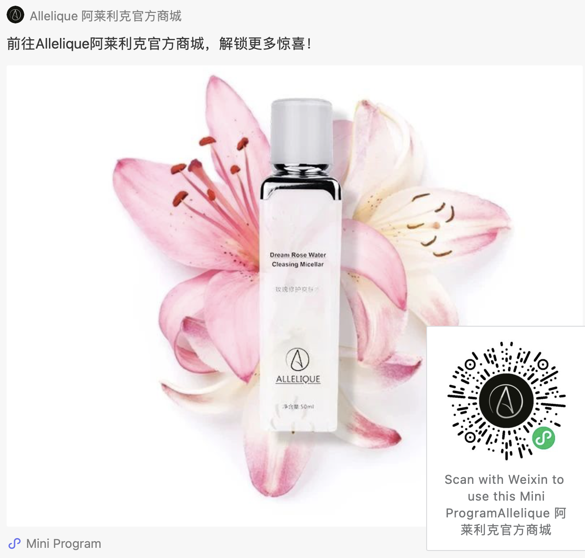

阿莱利克「玫瑰修护爽肤水」上市｜Allelique Dream Rose Water Cleansing Micellar 清洁皮肤是日常工作的第一步，也是必不可少的步骤。无论是卸妆还是皮肤清洁，都非常有利于我们的肌肤。它有助于去除皮肤表面的污垢、杂质和多余的皮脂（油）。深层清洁毛孔，轻微地抽出堵塞在毛孔中的污垢，比如说黑头和白头。合适的清洁剂可以调节皮肤类型，这意味着可以在不剥离皮肤天然油脂的情况下保护和滋养皮肤。 Cleansing the skin is the first and essential step in the routine. The benefits of cleansing start from removing makeup to cleaning the skin. It helps remove superficial dirt, impurities, and excess sebum (oil) production. The pores are deeply cleansed, lightly extracting congested pores, which include blackheads and whiteheads. Suitable cleansers can help condition the skin type, meaning the skin is protected and nourished without stripping the natural oils of the skin. 把握力度，轻柔地清洁很重要。因为我们的皮肤是需要进行物理治疗的器官，过于用力的按压或拉扯皮肤会加速过早衰老，而且可能引起不必要的皮肤刺激。 While we are cleansing, it is important to cleanse gently. This is because our is skin is an organ that needs to be physically treated with care. Too much aggressive pressure or dragging and pulling the skin- can speed premature aging as well as causing unnecessary skin irritation. 玫瑰水是使用蒸汽蒸馏玫瑰花瓣后产生的水。玫瑰水焕发芳香，有时被用作温和的天然香精。它起源于伊朗，除了具有迷人的香气外，对皮肤也有惊人的益处。 Rosewater is created by distilling rose petals with steam. Rosewater is fragrant, and it is sometimes used as a mild natural fragrance. It originates from Iran. Besides its beautiful fragrance, rose water has amazing benefits for the skin. 它具有抗发炎的特性，可以镇定皮肤并保持皮肤的酸碱平衡。还可以帮助减少痤疮，皮炎和湿疹。去除油污和污垢，并为皮肤补充水分，保湿的同时使肌肤恢复活力。玫瑰水有助于增强皮肤细胞和再生皮肤组织。它可以减少发红和斑点。甚至还可以减少细纹和皱纹。 It has anti-inflammatory properties which can calm the skin and maintain the skin’s ph balance. It can help reduce acne, dermatitis, and eczema. It can remove oil and dirt as well as hydrating the skin- revitalizing and moisturizing. Rosewater helps to strengthen skin cells and regenerate skin tissues. It can reduce redness and blotchiness. This can also keep fine lines and wrinkles at bay. 每个人都有一个晨间例行的流程，其中包括护肤步骤。这对我们的日常例行工作而言是重要的一步，因为它能使我们整装待发，为其余时间做好准备。 Everyone has a morning routine which includes a skincare routine. This is an important step to our daily morning routine as this sets us up, fresh, and ready for the rest of the day. 晨间护肤以轻柔的清洁开始。使用适合您皮肤类型的清洁产品，轻轻去除皮肤表面污垢、油脂和杂质。温和的向上打圈按摩可以帮助彻底清洁肌肤，并刺激血液循环。这为下一步做好准备。 The routine starts with a gentle cleanse. Using a suitable cleanser for your skin type to gently remove any superficial dirt, oils, and impurities. Gentle upwards and circular motions can help thoroughly clean the skin, as well as stimulating blood circulation. This will prepare the skin for the next products to be applied. 清洁皮肤并做好准备后，接下来可以使用碳粉。专为您的皮肤类型打造的碳粉可帮助去除化妆，污垢和多余油脂的痕迹。它可以缩小毛孔，清除堵塞的油脂粒，最小化黑头和白头。然后细化不均匀的皮肤纹理，提亮肤色，减轻色素沉着和疤痕，改善肤色不均。滋润、抚平和滋养皮肤细胞。 After the skin is clean and prepared, a toner may be used next. A toner formulated for your skin type can help remove traces of makeup, dirt, and excess oils. It can help tighten and reduce enlarged pores. De-congest clogged follicles. Minimize blackheads and whiteheads. Refine uneven skin texture. Brighten the complexion. Lighten hyperpigmentation and scarring. And it can hydrate, smooth, and nourish the skin cells. 使用碳粉后，可以使用与您的皮肤类型相符的保湿产品，这可以帮助皮肤补充重要的活性成分。滋养干燥的皮肤细胞，刺激胶原蛋白和弹性蛋白的产生。还可以使皮肤感到柔软和水嫩。 After treating the skin with a toner, a moisturizer compatible with your skin type may be used. This can help replenish and feed the skin with vital active ingredients. Nourish dry skin cells. Stimulate collagen and elastin production. Also making the skin feel soft and supple. 轻柔地清洁我们的皮肤非常重要。这可以使我们的皮肤健康，受到保护并保持年轻。玫瑰修复爽肤水是温和清洁皮肤的首选产品。它可以有效去除污垢和杂质，并为皮肤补水。 It is so important to cleanse our skin gently. This keeps our skin healthy, protected, and youthful. The Dream Rose Water Cleansing Micellar is the go-to product for gentle cleansing for your skin. This can help remove dirt and impurities as well as providing hydrating rose water benefits to the skin.
Sep20, 2020
Allelique产品的科技优势！
Dec 20, 2020

Allelique的科技理念。
Allelique作为一家科技公司，不断将重心专注于科技创新和升级，打造出各种技术含量和市场 竞争力极高的专利产品。 我们专注于创新和不断升级新技术，以进取积极的心态始终保持竞争的优势地位！
关于公司
我们为顾客提供 最极致的产品和专业的知识向导 助力每日居家生活体验。 同时，Allelique也将会通过产品和贵宾课程为您呈现顾客的生活理念 我们致力于为消费者提供高科技创新以及来自不同文化背景的植物知识从而在护肤方面达到完美的功能和形式。